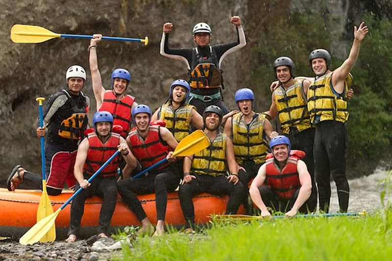

Conectando você à força e à emoção da natureza através do lema que guia nossos passos, temos como missão proporcionar experiências inesquecíveis de aventura e conexão com o meio ambiente por meio do rafting, combinando o máximo de adrenalina com os mais rigorosos padrões de segurança, respeito à natureza e excelência no atendimento, impulsionados pela visão de ser a empresa de turismo de aventura de referência na nossa região, amplamente reconhecida pela qualidade das nossas expedições, paixão pelo que fazemos e compromisso contínuo com a sustentabilidade.